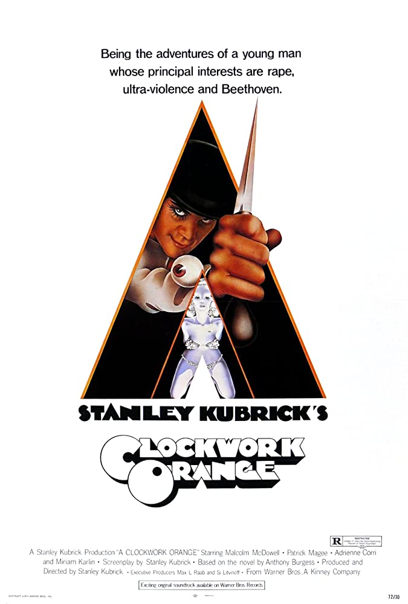
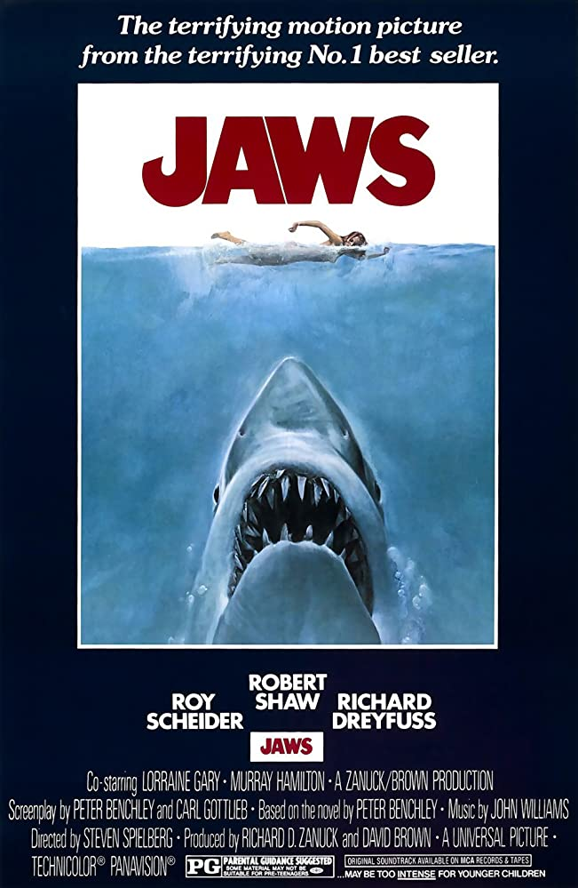

- Clasificación: PG
- Duración: 1h59m
- Género: Drama, Misterio
- Lanzado en: 05/09/1941
- Director(es): Orson Welles
- Elenco: Joseph Cotten, Dorothy Comingore,
Agnes Moorehead, Ruth Warrick, Ray Collins, ...

- Clasificación: R
- Duración: 2h16m
- Género: Drama, Ciencia Ficción
- Lanzado en: 02/02/1972
- Director(es): Stanley Kubrick
- Elenco: Malcolm McDowell, Patrick Magee, Michael
Bates, Warren Clarke, John Clive, ...

- Clasificación: PG-13
- Duración: 2h22m
- Género: Drama, Romance
- Lanzado en: 06/07/1994
- Director(es): Robert Zemeckis
- Elenco: Tom Hanks, Rebecca Williams, Sally
Field, Michael Conner Humphreys, ...

- Clasificación: R
- Duración: 2h26m
- Género: Drama, Crimen
- Lanzado en: 21/09/1990
- Director(es): Martin Scorsese
- Elenco: Robert De Niro, Ray Liotta,
Joe Pesci, Lorraine Bracco, Paul Sorvino, Frank Sivero, ...

- Clasificación: R
- Duración: 2h55m
- Género: Crimen, Drama
- Lanzado en: 24/03/1972
- Director(es): Francis Ford Coppola
- Elenco: Marlon Brando, Al Pacino, James Caan,
Richard S. Castellano, Robert Duvall, ...

- Clasificación: R
- Duración: 3h22m
- Género: Crimen, Drama
- Lanzado en: 18/12/1974
- Director(es): Francis Ford Coppola
- Elenco: Al Pacino, Robert Duvall, Diane
Keaton, Robert De Niro, John Cazale, Talia Shire, ...

- Clasificación: PG
- Duración: 2h04m
- Género: Aventura, Thriller
- Lanzado en: 20/06/1975
- Director(es): Steven Spielberg
- Elenco: Roy Scheider, Robert Shaw, Richard
Dreyfuss, Lorraine Gary, Murray Hamilton, ...

- Clasificación: R
- Duración: 2h34m
- Género: crimen, Drama
- Lanzado en: 14/10/1994
- Director(es): Quentin Tarantino
- Elenco: John Travolta, Samuel L. Jackson, Uma
Thurman, Bruce Willis, Ving Rhames, ...

- Clasificación: R
- Duración: 2h22m
- Género: Drama
- Lanzado en: 14/10/1994
- Director(es): Frank Darabont
- Elenco: Tim Robbins, Morgan Freeman,
Bob Gunton, William Sadler, Clancy Brown, ...

- Clasificación: R
- Duración: 2h26m
- Género: Drama, Horror
- Lanzado en: 13/06/1980
- Director(es): Stanley Kubrick
- Elenco: Jack Nicholson, Shelley Duvall,
Danny Lloyd, Scatman Crothers, Barry Nelson, ...